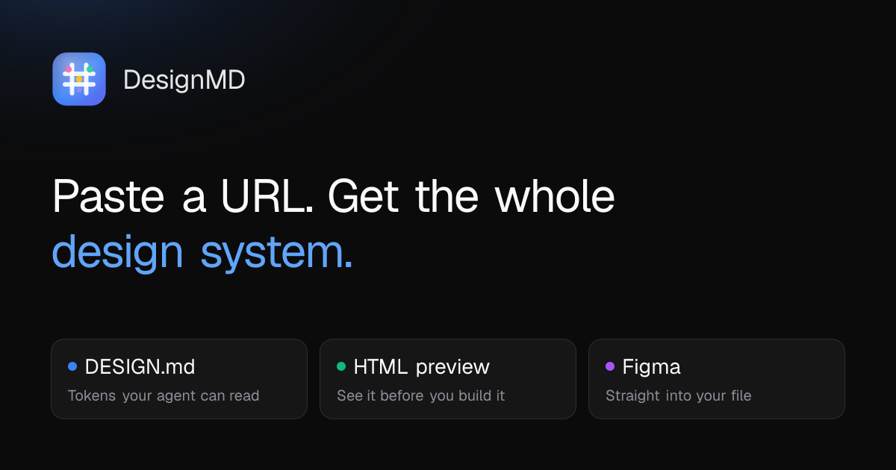
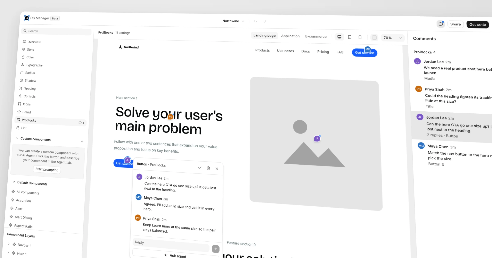
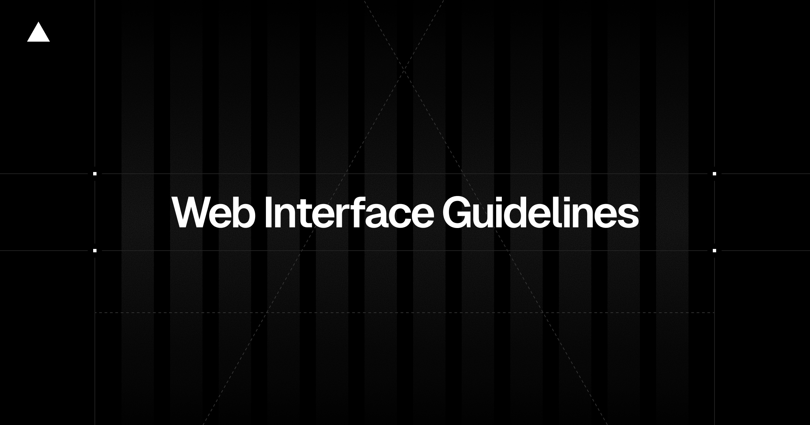
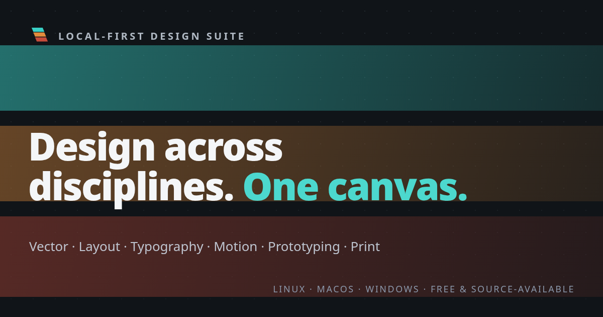

今天没什么“十倍效率”可写，倒是几件小更新终于把设计上下文接起来了：Figma 能往外吐 DESIGN.md，画布评论能直接交给 agent，界面规范也能塞进 AGENTS.md。
以前的 AI 工具很爱往设计稿里写东西，写完就走。现在总算有人开始补另一半：原始层在哪、为什么改、谁有权限、改完怎么验。系统只会生成，不会回读，说到底还是个手快的外包。

DesignMD 的 Figma 插件现在能反向把文件整理成 DESIGN.md。Variables、styles、components 会读，screens、prototype flows、FigJam diagram 可以选着读；整份文件、部分页面或当前选区都行，每一节还能跳回原图层。
这才叫 “both ways”。8 credits，而且生成失败不扣，账也算得明白。还没拿复杂组件库实测，先不替它保证变量别名和组件属性能不能收拾干净。

DS Manager 这次加了画布评论，分享链接里也能留。Pro 用户可以在评论里 @agent，MCP 接进来的 Claude Code 或 Cursor 能读 open comments、改系统、回复，然后把 thread resolve 掉。
我更喜欢另一个小细节：隐藏 outline 这类 variant 时，可以指定 secondary 顶上，旧代码继续传 variant="outline" 也不会立刻炸。设计系统最怕“整理一下”变成全仓库迁移，这个处理很懂现实。

Vercel 把键盘、focus、hit target、loading、URL state、paste、overscroll 这些细碎规则摊成了一张长清单，还顺手做成 web-design-guidelines skill，并给了可直接放进项目的 AGENTS.md。
这比再喂 agent 一张漂亮截图有用。截图告诉它长什么样，规则才告诉它哪些地方不能乱来。

Varve 想把 vector、layout、typography、photo、motion、prototype 和 print 全塞进一个本地应用里。0.5.1 还是 public beta，Linux、Windows 和 Apple Silicon Mac 都有包；无需账号、没有订阅，实时协作暂时只有 UI 壳子。
野心大得有点吓人，但至少 README 把丑话写在前面：它现在是 FSL-1.1-MIT 的 source-available，不是 OSI open source，每个版本两年后才转 MIT；macOS 安装包也没有 notarize。想试可以，重要文件先备份，别看到 GitHub 仓库就自动脑补成成熟开源替代品。
Webflow Campaigns 已经单独开卖：先从品牌里抽设计系统，再按 brief 生成落地页和广告；persona、行业、单个客户都能各有一条 URL，Marketo / HubSpot 收表单，Google Ads 发 Performance Max，最后再接 HubSpot / Salesforce 看 pipeline。
设计系统终于不只负责“统一”，还要负责“出量”。好处是设计、发布、转化第一次放在一条线上；坏处也很明显——如果品牌规则只有 logo、颜色和圆角，最后只会稳定地批量生产平庸页面。
GitHub App 现在可以直接装到 enterprise，repository policy、ruleset、2FA、verified domain、IP allowlist、成员权限和 repository access 都补了对应权限与 API。
这条看起来离视觉设计很远，其实正好相反。只要 agent 能碰代码、设计资产和发布流程，权限边界就是产品体验的一部分。全公司继续共用一把 classic PAT，才是真的自动化恐怖片。
WWDC26 这支 SwiftUI 更新不是今天才发，不过最近做跨尺寸界面值得翻出来：toolbar 可以设 visibility priority、收进 overflow、滚动时自动 minimize；列表、网格和 section 也补了重排，AsyncImage 终于有缓存改进。
设计稿里那句“空间不够就自动收起来”，以前常常等于让开发现场发明规则。现在 API 已经把顺序、溢出和缩起拆开了，交付时也该把优先级写清楚。
原片播放器https://player.vimeo.com/video/1239323190?title=0&byline=0&portrait=0
片子从 Terry Fox 一个人在夜路上跑开始，镜头慢慢把城市、研究者、病房和普通人展开。1980 年代的暖色、略带手作感的角色和很克制的景深，把“纪念人物”做成了“影响还在继续”，没有急着用旁白喊口号。
最聪明的是尺度变化：先让观众贴着一个人的脚步走，再不断拉开，看到这件事如何进入更多人的生活。橙子、海报、研究者出场顺序还埋了 Terry 故事里的细节。品牌片要讲 legacy，可以学这个——先找一个能被看见的动作，再让世界围着它长出来；别一上来就是宇宙、粒子和一句改变世界。
position-area、Atelier UI、GitHub usage metrics、Vercel MCP feedback、Ontario / DWP Design System、Kim Soobin《Together》（10 月 25 日）；Dyson、FutureDeluxe / Verizon、Microsoft Foundry、Query、Bullpadel、Frame x Ege、Cypher。核验说明：DesignMD、shadcndesign、Varve GitHub、Webflow、Vercel、GitHub Changelog、Apple Developer、Stash API / 文章页及 Vimeo player 于 2026-10-26 回读。所有写入日报的图片均下载并检查原始像素，宽度不低于 1200px；Apple 页面候选图仅 500px，已省略。